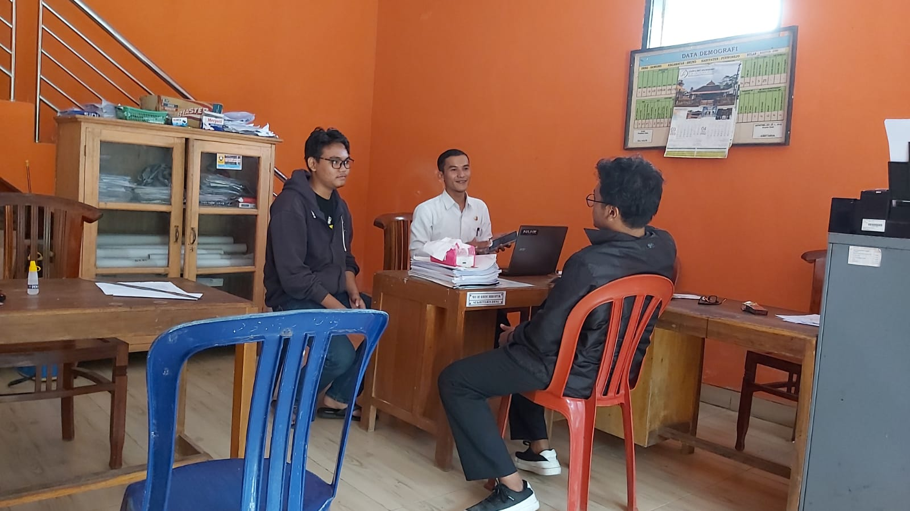
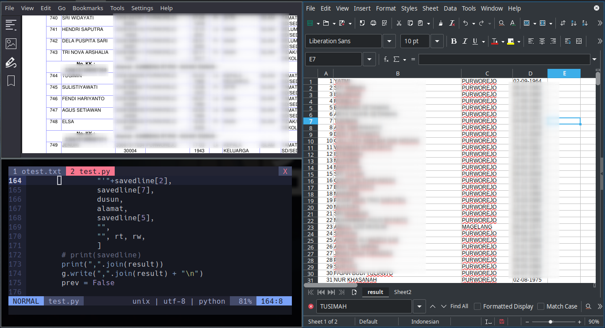
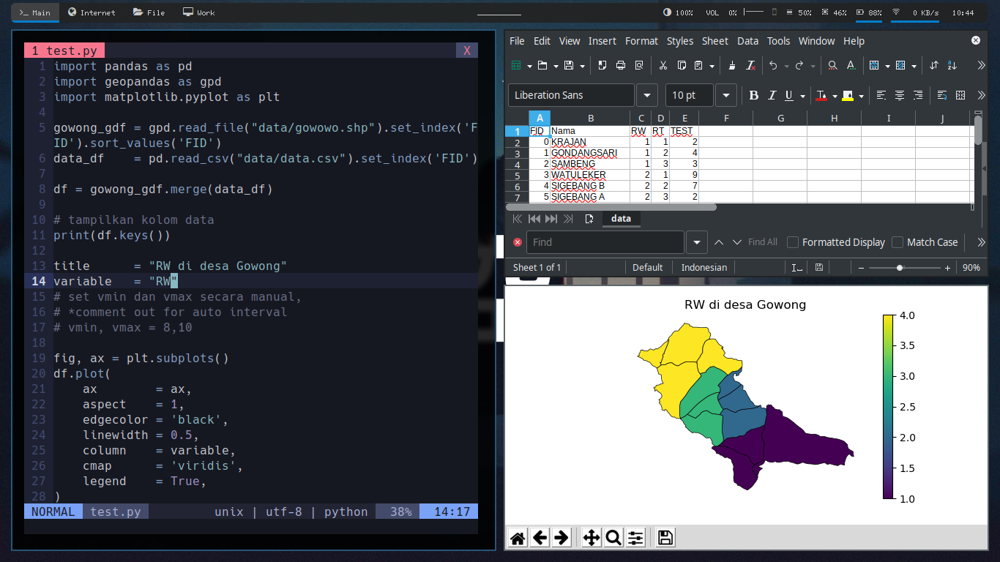
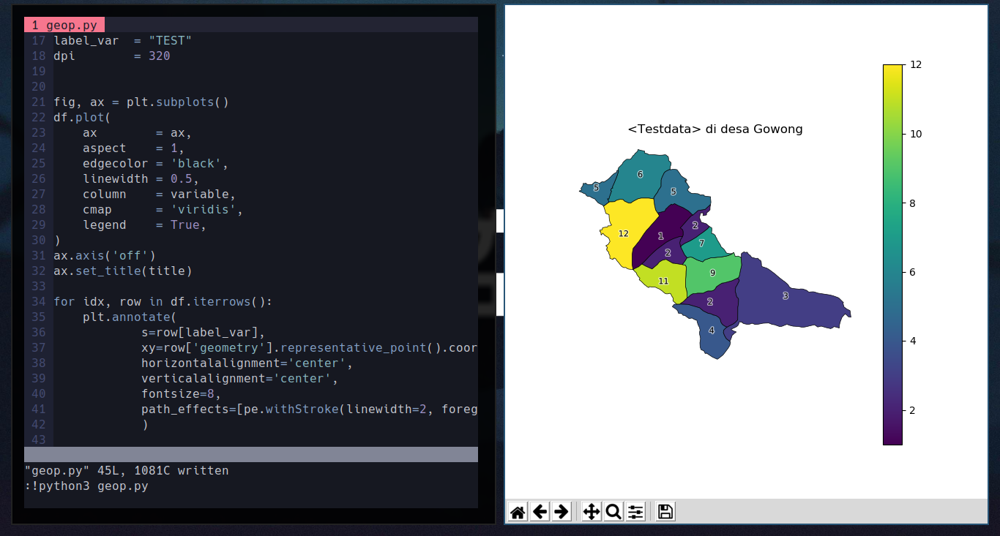

Proker 2 Pembuatan Perangkat Lunak Sederhana
Rencana awal pembuatan perangkat lunak pembuatan surat online dibatalkan karena takutnya ada ancaman keamanan data penting. Kegiatan digantikan dengan pembuatan script untuk membantu kegiatan lainnya seperti (a) konversi data BIP menjadi format sesuai database Desa yang telah ada, (b) Generator infografis peta dengan input data csv.
*Hover gambar untuk melihat deskripsi
-

Diskusi dengan Perangkat Desa
-

Script untuk mengubah data BIP menjadi format sesuai database desa
-

Script untuk mengenerate infografi peta dari data CSV
Script dibuat menggunakan python
memanfaatkan pustaka geopandas
File .shp peta desa gowong didapat dari proker 4
-

2